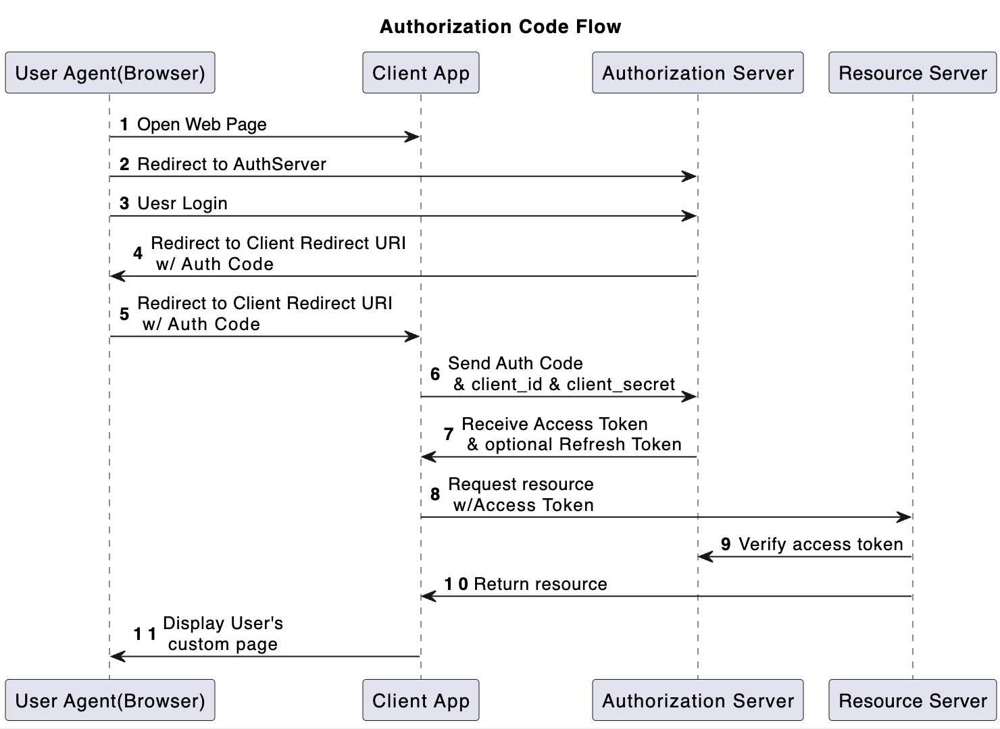
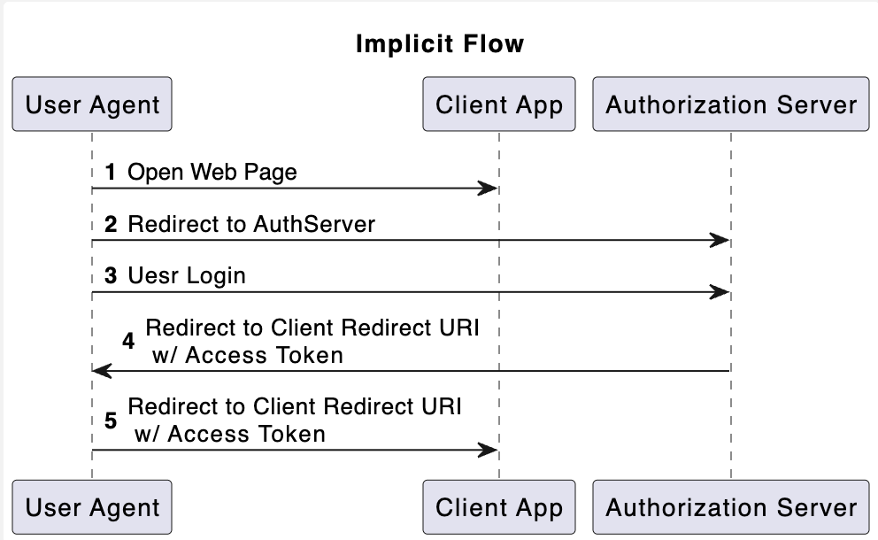
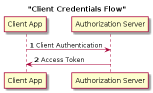
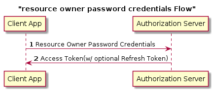

OAuth2
OAuth2 Explained
OAuth Overview
The OAuth 2.0 authorization framework enables a third-party application to obtain limited access to an HTTP service, either on behalf of a resource owner, or by allowing the third-party application to obtain access on its own behalf.
Oauth 2.0 is defined in RFC 6749
Note that OAuth is an authorization framework. It is not an authentication protocol.
One use case is allowing a photo printing web application to access photo stored in a photo storage application. One way is to give your credentials to the photo printing application. This will give too much power to the photo printing application. It is very risky because the photo printing application may access your photo after printing the photo. If the credentials are leak from the photo printing application and the credentials are used elsewhere, the user’s other accounts are exposed too. A better way is to use OAuth 2.0 to grant temporary access to photo printing application.
Four Roles
OAuth 2.0 defines four roles:
- resource owner A user or application that owns the data. A github user or Google user can be a resource owner
- client A client that request access to resources on the resource server. A Web application, User agent or native application can be client.
- resource server The server hosting the protected resources, capable of accepting and responding to protected resource requests using access tokens.
- authorization server The server issuing access tokens to the client after successfully authenticating the resource owner and obtaining authorization.
Authorization Server and Resource Server can be the same server or separated.
Client
OAuth defines two client types, based on their ability to authenticate securely with the authorization server
- confidential client is capable of maintaining the confidentiality of their credentials(e.g. back-end web server)
- public client is incapable of maintaining the condidentiality of their credentials.(e.g. browser-based app)
Before using OAuth, the client needs to register with the authorization server.
When registering a client, the client developer SHALL:
- provide its client redirection URIs
- Include any other information required by the authorization server(e.g., application name, website, description, logo image, the acceptance of legal terms).
After registration, the authorization server will provide client_id and client_secret to the client.
OAuth Flows
An authorization grant is a credential representing the resource owner’s authorization. There are 4 types of Authorization Grant:
- Authorization Code
- Implicit
- Resource Owner Password Credentials
- Client Credential
Different Authorization grants result in different flows.
Authorization Code Flow
This is the most secured and most used flow. Typically used by a web application with a back-end.
1 Resource Owner(User) open Client(Web Application)’s page in the browser
2 User wants to login via Authorization Server. The login link is provided by the client. User clicks the login link and then user is redirect to Authorization Server. Here is an Example login URL. The response_type parameter is required and must be code for Authorization Code flow.
1 | https://authorization-server.com/authorize? |
The state parameter is used to protect against XSRF(Cross-site Request Forgery). Later, the authorization server sends back the state parameter. If the state parameter doesn’t match, someone else initiated the request. The state parameter is optional but highly recommended.
3 User successfully login to the Authorization Server. It can be username/password authentication or MFA
4 Authorization Server sends a link that can redirect Client app to Authorization Server. This link contains Authorization Code. Example Redirect URI with authorication code
1 | https://www.oauth.com/playground/authorization-code.html? |
5 The browser redirect the link to Client app
6 Client receive the Authorization Code. If state parameter exist, client can validate the state to mitigate CSRF attacks. If the request is valid, client sends a POST request to Authorization Server that contains Authorization Code its client_id and client_secret. Example Post Request
1 | POST https://authorization-server.com/token HTTP/1.1 |
7 Authorization Server issue an Access Token and an optional Refresh Token to the Client App. Example response body with Access token and refresh token
1 | { |
8 Client request resource from the Resource Server. The access token will be used in Authorication HTTP Header.
9 Resource Server verify the access token provided by the Client App with Authorization Server and verify that the access token has proper scope to access the resource
10 After the access token is validated, return the requested resource to Client App
11 Display User’s page
Implicit Flow
Implicit Flow is used by public clients. These clients are typically implemented in a browser using Javascript. Examples are React application or Angular applciation. Implicit flow is not as secured as Authorication Code flow. Try to use Authorication Code instead.
The above sequence diagram doesn’t include interaction with resource server because it is the same as authorization code flow.
Example Request
1 | https://authorization-server.com/authorize? |
- response_type is required. value is token
- client_id isrequired
- redirect_uri is optional
- scope is optional
- state is optional but recommended.
Client Credential Flow
Used for System to System communication.
Example Request
1 | POST /token HTTP/1.1 |
- The grant_type parameter is required. Must be
client_credentials. - scope is optional
Password Credentials Flow
This flow is not very common. Usually used for backward compatibility.
Example Request
1 | POST /token HTTP/1.1 |
- The grant_type parameter is required. Must be
password. - username and password parameter are also requried.
- scope is optional
OpenID Connect
OpenID Connect(ODIC) is a simple identity layer on top of the OAuth 2.0 protocol, which allows computing clients to verify the identity of an end-user based on the authentication performed by an authorization server, as well as to obtain basic profile information about the end-user in an interoperable and REST-like manner. In technical terms, OpenID Connect specifies a RESTful HTTP API, using JSON as a data format.
OpenID Connect allows a range of kinds of clients, including Web-based, mobile, and JavaScript clients, to request and receive information about authenticated sessions and end-users. The specification suite is extensible, supporting optional features such as encryption of identity data, discovery of OpenID Providers, and session management.
Since OpenID Connect builds on top of OAuth 2.0. The flow is the same as OAuth2.0.
After Client sends Authorization Code to exchange for access token, OpenID Connect returns access token and an optional refresh token. it also contains id_token too.
id_token is A JWT that contains identity information about the user that is digitally signed by Google. You can use https://www.jsonwebtoken.io/ to parse a JWT.
Example response from Authorization Server that contains access_token and an id_token.
1 | { |
You can try OpenID Connect using OAuth 2.0 Playground